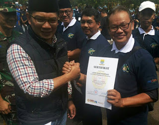

Lurah Rancanumpang Raih Sertifikat Pembina Umum Karta Terbaik
By Ranum Rumasa | Senin, 17 Oktober 2016
Karang Taruna Rancanumpang Terbaik Kedua Tahap Berkembang Tingkat Kota Bandung
Rancanumpang.com -- Wali Kota Bandung Ridwan Kamil selaku Ketua Dewan Pembina Umum Karang Taruna Kota Bandung menyerahkan sertifikat kepada Karang Taruna Berprestasi, Camat, dan Lurah Pembina Umum Terbaik di Kota Bandung, pada pelaksanaan Bulan Bakti Karang Taruna (BBKT) di Secaba Rindam III/Siliwangi, Sindanglaya, Kota Bandung, Minggu (16/10/16).
Dasar pemberian sertifikat, dalam tahun 2016 Ketua dan Pengurus Karang Taruna Bandung melakukan evaluasi dan penilaian terhadap berbagai aktivitas positif Karta se-Kota Bandung. Penilaian dilakukan juga terhadap Camat dan Lurah.
Karang Taruna Berprestasi di antaranya Karang Taruna Rancanumpang sebagai Terbaik Kedua Tahap Berkembang Tingkat Kota Bandung dan Lurah Rancanumpang menjadi Pembina Umum Karta Terbaik.
Karta Kecamatan Gedebage meraih predikat terbaik dalam penanganan kegiatan PMKS.
{kind=link}
{kind=link}
{kind=link}